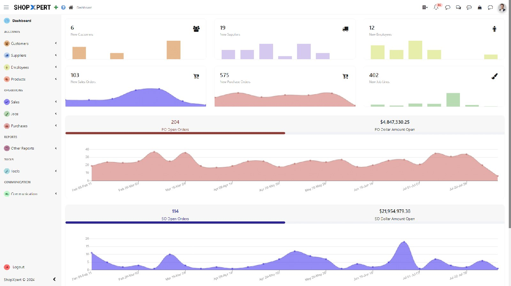
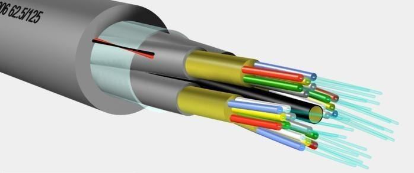

Services — ERP
ERP
The system your business runs on is the most important technology decision you’ll make this decade. Get it right.
Start here
Selection comes first. Always.
Most ERP disasters don’t start at go-live — they start at selection, when a vendor sells you their product instead of your solution. My flagship service, ERP Selection Consulting, is independent and vendor-neutral: requirements built around how your business actually runs, demos scored against your processes, honest total-cost-of-ownership math, and negotiation backup from someone who’s seen the vendor’s side of the table.
The most expensive ERP is the wrong one. Read that twice, then read these:
Does this sound familiar?
A vendor sold you their product instead of your solution. The demo was beautiful, the references were glowing, and eighteen months later you’re running a system that sort of fits if you squint. Vendor-led selection is how most ERP disasters start. My selection work flips the process: requirements built around how your business actually runs, demos scored against your processes, and negotiation backup from someone who’s sat on the vendor’s side of the table.
The project stalled and nobody will say why. The partner blames your team, your team blames the partner, and the timeline slides another quarter. Stalled ERP projects are almost never about the software — they’re about fuzzy scope, dirty data, no internal ownership, or a partner that oversold. I come in as the second opinion that names the real problem, then either gets the project moving or gives you an honest verdict on whether it’s worth saving.
The quote and the project turned out to be different numbers. The proposal said one thing; the add-ons, integrations, data work, and “phase two” said another. This happens because add-on categories — EDI, payments, PIM, middleware — get discovered after the contract is signed instead of during selection. I budget the categories into TCO before you pick anything, so the number you approve is the number you pay.
Your ERP partner stopped answering the phone. Tickets go into a void, the account manager rotated out, and you’re paying support for nothing. You don’t have to stay married to a partner that ghosted you. I take over orphaned systems — Odoo and SAP Business One — assess what’s actually deployed, stabilize what’s critical, and get you a partner who picks up.

The landscape for SMBs
For US small and midsize businesses, the ERP conversation usually comes down to two serious contenders — and I implement both through Quaint Business Solutions, where I’m Head of Sales:
Odoo — the all-in-one platform: CRM, accounting, inventory, manufacturing, ecommerce, and dozens more apps sharing one database. Best fit for growing SMBs that want breadth and value — one flexible system for the whole operation without enterprise license shock.
SAP Business One — the heavyweight for SMBs that need financial depth, inventory discipline, and a mature partner ecosystem. Best fit for distributors, manufacturers, and companies where the numbers have to be exactly right, every time.
My background: 10+ years in ERP, General Manager of the Northeast at Vision33 (a leading global SAP Business One partner), VP of Business Development at SEIDOR. I’ve run the business of delivering this software — which is why my selection advice doesn’t sound like a brochure.

Beyond the core: add-ons & integrations
Here’s what vendors don’t put on the first slide: no ERP does everything out of the box. The real system — the one your team lives in daily — is the core ERP plus the add-ons and integrations around it. Budget these during selection, not after go-live, because they change the TCO math and sometimes change which ERP you should pick. These are the categories that come up constantly in my work:
EDI (Electronic Data Interchange). If you sell to big-box retailers, grocery chains, or large distributors, EDI isn’t optional — it’s how purchase orders, invoices, and shipping notices move between you and your trading partners, in standardized electronic formats instead of email and phone calls. Without it, you’re retyping orders and paying chargebacks for compliance failures. EDI capability — whether native, via an add-on, or through a third-party provider integrated to your ERP — should be confirmed during selection if any of your customers require it, because retrofitting it later is painful and expensive.
Integrated credit card processing. Taking cards inside the ERP — at order entry, in AR, at the counter — instead of in a separate terminal means payments post automatically, reconciliation stops being a monthly archaeology dig, and you stop paying people to re-key transactions. Tools in this category, like eBizCharge’s ERP payment integrations, embed processing directly in the order-to-cash flow with tokenization and PCI-friendly handling. Who needs it: any distributor, wholesaler, or manufacturer taking card payments from customers regularly. The interchange savings alone often justify it; the labor savings are the bonus.
PIM (Product Information Management). If you sell thousands of SKUs across channels — your website, Amazon, retailer portals, print catalogs — product data becomes a full-time job: descriptions, specs, images, pricing, translations. A PIM system (Perfion is a well-known example in the SAP Business One ecosystem) centralizes all of it in one place and pushes clean, consistent data everywhere it needs to go. Who needs it: manufacturers and distributors whose product catalog is a competitive asset and whose current “system” is a shared drive full of conflicting spreadsheets. Bad product data kills conversions and creates returns; a PIM kills the chaos.
Integration middleware. Your ERP doesn’t live alone — there’s the ecommerce platform, the WMS, the CRM, the payroll system, the bank. Middleware (integration platforms) connects them with managed, monitored data flows instead of manual exports, CSV email chains, and prayer. Who needs it: any company where people are currently the integration layer — retyping web orders into the ERP, hand-building reports from three systems, reconciling numbers that never match. Good middleware turns “swivel-chair integration” into plumbing you stop thinking about.
My rule on all of this: every add-on has to earn its keep. I wrote a full guide on the B1 side — SAP Business One Add-Ons Actually Worth Your Money — covering which categories consistently deliver ROI and the red flags that mark the ones that don’t.
What’s included
- Independent ERP selection consulting — vendor-neutral, no quota (flagship service)
- Odoo implementation via Quaint Business Solutions (details)
- SAP Business One implementation via Quaint Business Solutions (details)
- Add-on and integration strategy: EDI, payments, PIM, middleware — what you need, what you don’t
- Rescue and second opinions for troubled or stalled projects
- Post-go-live optimization: the system keeps getting better after launch
Who it’s for
US small and midsize businesses outgrowing QuickBooks and spreadsheets, companies choosing between SAP Business One and Odoo, businesses burned by a bad implementation looking for a second opinion, and anyone whose current ERP partner stopped answering the phone. If your system is holding the business back instead of moving it forward — that’s the profile.
When is the right time to buy ERP?
Earlier than feels comfortable, later than the vendors tell you. The honest signals: month-end close takes weeks instead of days, inventory accuracy is a rumor, you’re paying people to retype data between systems, and every growth conversation ends with “our systems can’t handle that.” Buy when the workarounds cost more than the system — in labor, in errors, in decisions made on bad data. Don’t buy because a vendor’s quarter ends next month. And don’t wait until the business is breaking; implementing ERP during a crisis is how projects fail. The sweet spot is when the pain is obvious but the operation is still stable enough to absorb change.
FAQ
Should we pick the software or the partner first?
Both matter, but pick the fit first. The best software with a bad partner fails; decent software with a great partner usually succeeds. That’s why selection consulting covers partner evaluation too — who implements it matters as much as what you buy. Interview partners like hires, because that’s what they are.
Can we phase the implementation instead of big-bang?
Yes, and you usually should. Core financials and operations first, advanced modules and add-ons in waves. Phasing reduces risk, gets value flowing sooner, and keeps the team from drowning. Big-bang go-lives make for great war stories and terrible quarters.
How do we budget for add-ons we haven’t chosen yet?
Identify the categories you’ll need during selection (EDI? payments? PIM? WMS?) and budget a realistic range per category into the TCO — even before you pick specific products. The categories rarely change; only the vendors do. This is the step most companies skip, and it’s why “the quote” and “the project” are always different numbers.
Our ERP project is struggling. Is it salvageable?
Usually. Struggling projects are almost always struggling projects — scope creep, dirty data, no ownership, partner issues — not struggling software. I assess what’s salvageable, stabilize what’s critical, and rebuild the plan. Bring me the mess; I’ve seen worse, and I’ll tell you straight if it isn’t worth saving.
Do you work with companies outside the US?
My implementation work through Quaint Business Solutions focuses on US small and midsize businesses. Selection consulting and advisory can flex — and my 15 years in Mexico means cross-border operations aren’t foreign to me. Ask on the call.
The most expensive ERP is the wrong one. Let’s get it right.
Thirty minutes. Selection, implementation, or rescue — straight answers.
Book a free consult